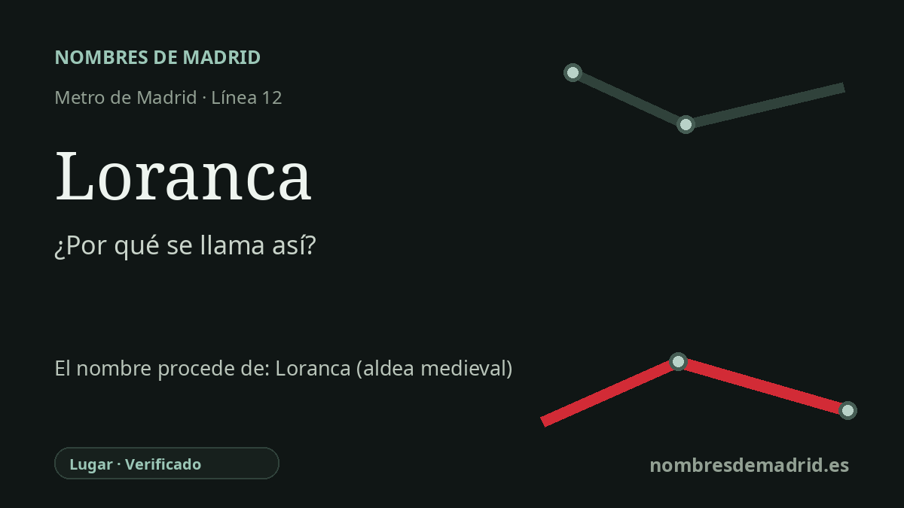

Publicado el · Investigación de Nombres de Madrid · Cómo verificamos cada origen · 6 fuentes consultadas
Respuesta rápida
La estación de Loranca toma su nombre del barrio fuenlabreño de Loranca. Ese nombre recupera el de la antigua aldea o despoblado medieval de Loranca, recordado en fuentes de la Edad Moderna como uno de los asentamientos cuyos vecinos pasaron a formar Fuenlabrada.
La historia del nombre
El nombre de la estación es local y directo. Loranca es la parada de MetroSur que sirve a la urbanización Loranca de Fuenlabrada, y la Comunidad de Madrid la describe dentro de esa urbanización, en la calle de la Alegría. Cuando la línea 12 abrió al público el 11 de abril de 2003, la estación conservó el nombre que ya identificaba al entorno residencial.
Ese barrio moderno no inventó la palabra Loranca desde cero. Recuperó un topónimo fuenlabreño antiguo: la aldea o despoblado medieval de Loranca. En las Relaciones Topográficas del siglo XVI, los informantes de Fuenlabrada explicaban que el pueblo había sido fundado por vecinos de dos poblados cercanos que se despoblaron, Loranca y Fregacedos. Como esa declaración se recogió en la década de 1570 y situaba el traslado unos doscientos años antes, los historiadores colocan la formación de Fuenlabrada hacia mediados del siglo XIV.
El nombre remite además a un paisaje anterior a la aldea medieval. Las intervenciones arqueológicas en el área de Loranca han documentado ocupación rural tardorromana y visigoda, incluidas dos necrópolis altomedievales cerca del Camino del Bañuelo y próximas a los arroyos de Aldehuela y Loranca. Esto no demuestra que el nombre de la estación sea visigodo, pero sí muestra que Loranca no era solo una etiqueta urbana de finales del siglo XX: pertenecía a un territorio rural usado durante mucho tiempo.
El regreso contemporáneo del nombre llegó de la mano del planeamiento. Loranca Ciudad-Jardín fue una de las grandes actuaciones residenciales en el borde de Fuenlabrada en los años noventa, junto a Móstoles y más tarde servida por MetroSur. La prensa de la época y fuentes arquitectónicas describen el proyecto inicial con unas 7.000 a 7.300 viviendas, por lo que la cifra repetida de 12.000 viviendas debe tratarse como una cifra posterior o del barrio en sentido amplio salvo que se cite un documento urbanístico concreto.
La etimología lingüística más profunda es menos segura que el origen del nombre de la estación. Un artículo especializado de Fernando Jiménez de Gregorio propone que Loranca puede proceder del cognomen céltico Laurus con el sufijo -anca, y menciona formas medievales como Loranque. No se ha encontrado un apoyo consultado más sólido para las explicaciones actuales basadas en el árabe luran o en un supuesto árbol loranco, de modo que la formulación pública más prudente es esta: la estación se llama con seguridad por el barrio, el barrio conserva el topónimo medieval Loranca y el origen último de la palabra sigue siendo probable, no plenamente probado.